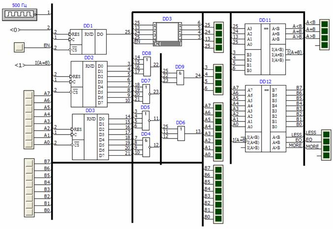
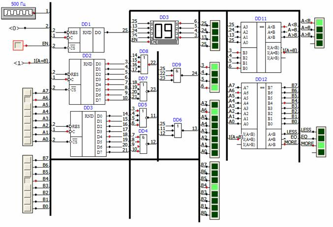

5.1. Тест компараторов (comparers_test(4,8).sch)
В программе есть четырех- и восьмиразрядные компараторы - элементы,
позволяющие сравнивать числа в двоичном коде. Данная схема является
наглядным примером, показывающим особенности их применения.
Схема имеет следующий вид:

Список присутствующих в схеме элементов:
- Генератор последовательности импульсов.
- Элемент логического нуля. Вместе с генератором осуществляет управление генераторами ПСЧ (DD1, DD2, DD3).
- Переключатель (соединен с входом EN индикатора DD10). Разрешение работы индикатора.
- Элемент логической единицы (соединен с входами I(A=B) компараторов). Требуется для корректной работы компараторов.
- Два блока по 8 переключателей. Задают сравниваемые числа для восьмиразрядного компаратора (DD12).
- Генераторы ПСЧ (псевдослучайных чисел) (DD1, DD2, DD3). Генерируемые ими числа используются для формирования чисел, сравниваемых четырехразрядным компаратором (DD11).
- Логические элементы разных видов (DD4 - DD9). Используются для формирования чисел, сравниваемых четырехразрядным компаратором (DD11).
- Четыре блока индикаторов (в средней части схемы). Отображают числа, сравниваемые компараторами.
- Компараторы (DD11, DD12).
- Два блока по 4 индикатора (в правой части схемы). Отображают результаты работы компараторов.
Пример работы схемы:
